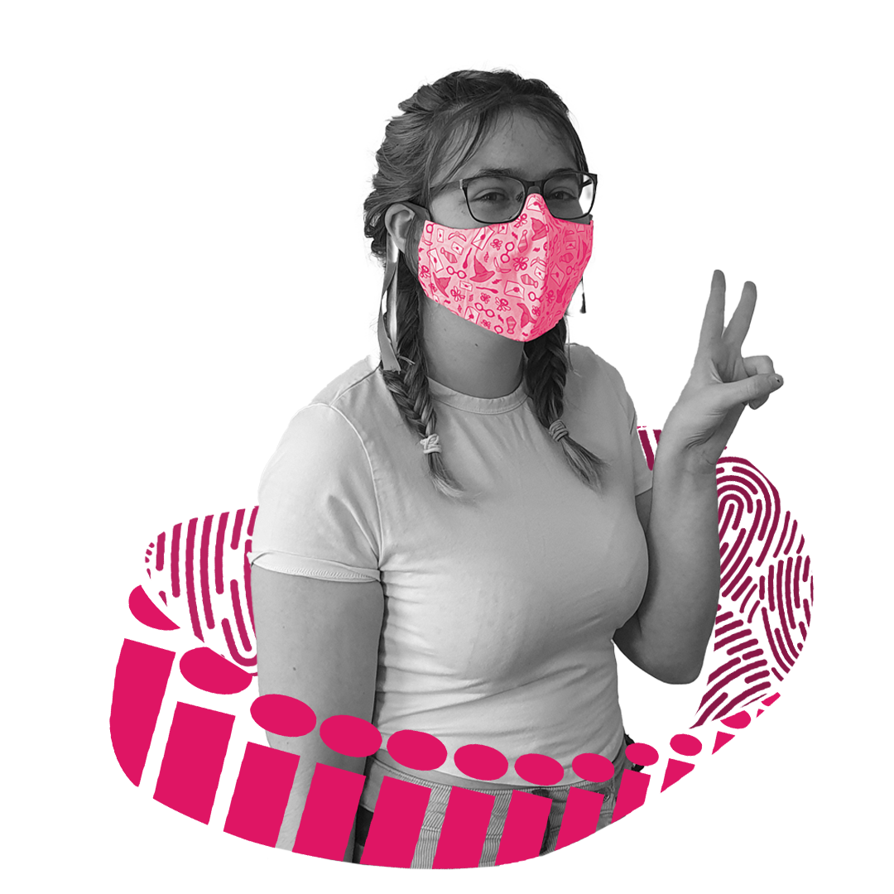
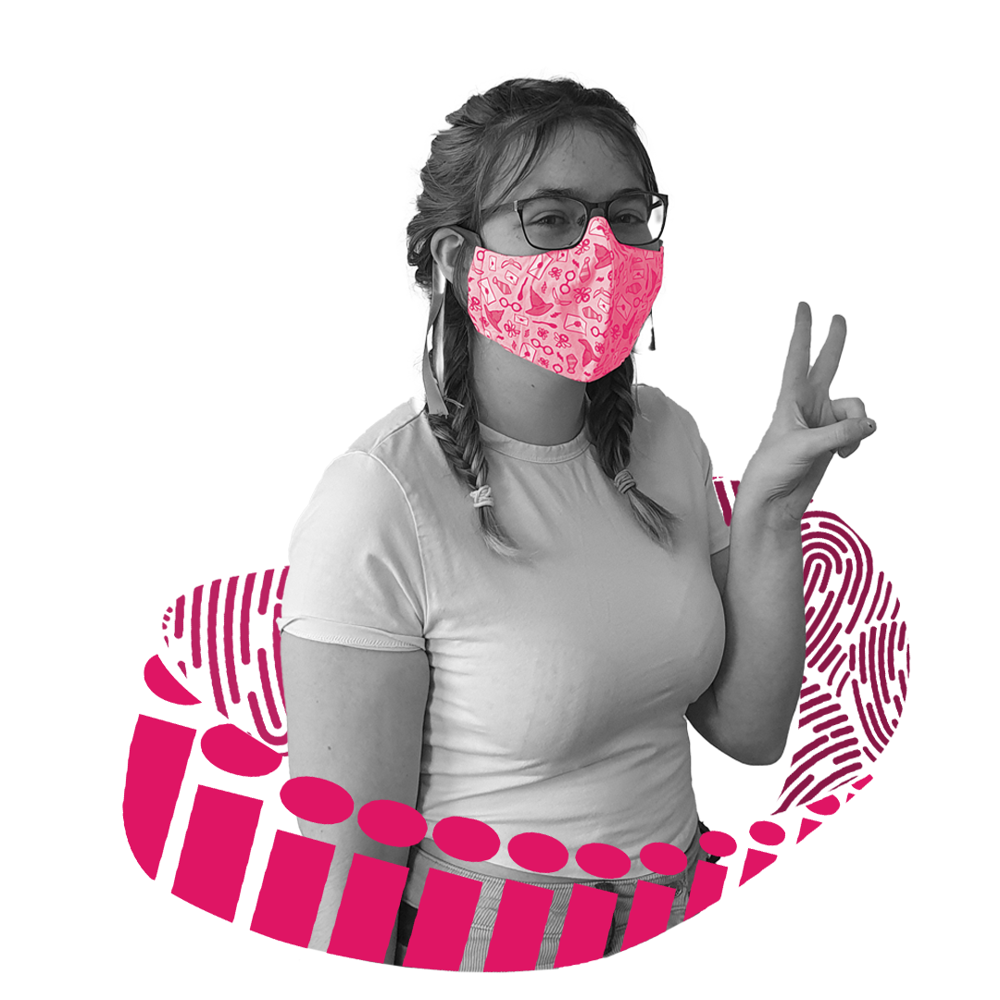

Paige Taylor
- Bachelor of Design
- Major in Interface Design
biography
Hey! My name is Paige Taylor and I’m studying a Bachelor of Design majoring in Interface Design. I was originally doing a Bachelor of Business majoring in Marketing and Communication Design, but decided I preferred UI/UX design to branding.
I’ve been doing design since Year 12 at Otumoetai College. I decided to do design as a fun project to
offset my business-oriented papers. However, when I started at The University of Waikato, I didn’t enjoy
doing business, and much preferred my design papers with Carolina. In my second year, I switched my
degree to design and changed my major to Interface. I thought to myself, ‘I would rather be doing design
as a career path’.
At Waikato, I have learnt many different skills. From how to code in different languages, to using
different design programs such as XD, Premiere, and After Effects. I find it interesting learning about
how different users interact with interfaces depending on when they were born, different cultures, and
gender.
project description
The world has become a lot more progressive over the past few years. From countries accepting gay
marriage, to actors coming out as part of the LGBTQ+ community. However, we still have a very long way
to go. As the first country to allow women to vote, New Zealand should also be one of the first to
accept the LGBTQ+ community. 3.4% of people in New Zealand identify as part of the community. Chances
are you’ve met someone that’s LGBTQ+ and not even realized it due to them not feeling like they can come
out.
Now they have a place to be themselves. ‘Find Your Place’ strives to create a space where the LGBTQ+
community can feel safe.
‘Find Your Place’ is an app that displays stores owned by supporters of the pride community. Users must
create an account to use the features to protect the anonymity of users who aren’t ready to come out to
friends and family. Once signed in, they can find places on the map, and navigate to them. There is also
an event feature, so a user can discover pride related events created by LGBTQ+ members near them.
Don’t sugarcoat my reality

For more information contact us
Email: degreeshow@waikato.ac.nz
Faculty phone: 0800 924 528
Faculty information: cs.waikato.ac.nz